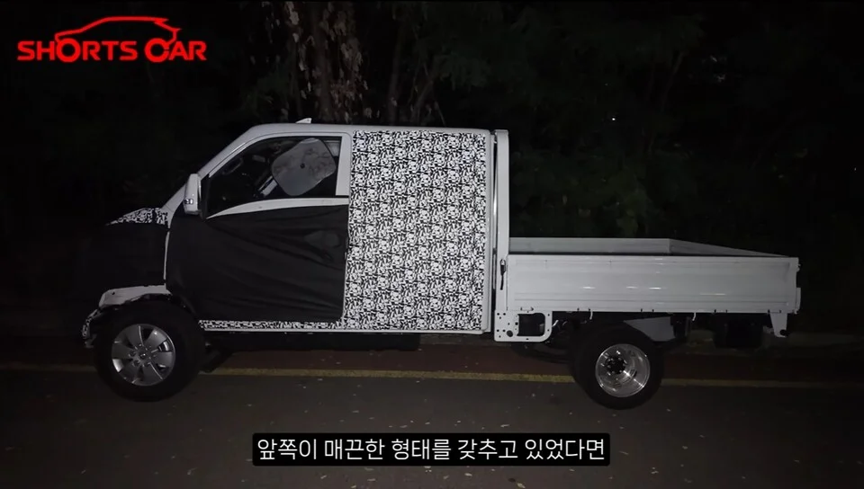
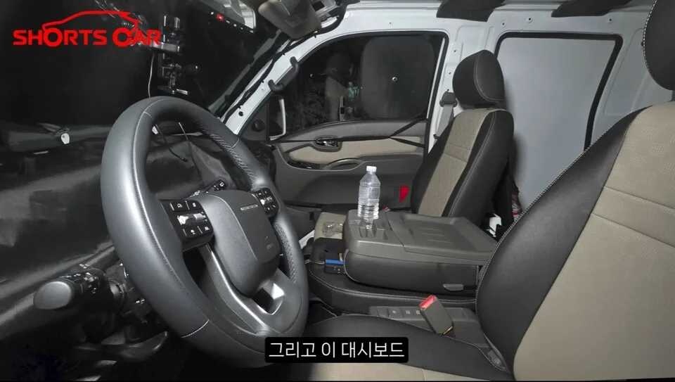

▲ 위장막을 두른 포터 5세대 프로토타입. 기존 캡오버형과 달리 엔진룸이 앞으로 돌출된 세미보닛 구조가 뚜렷하다 ⓒ autodaily
1. 무슨 일이 있었나
현대차 포터의 5세대 프로토타입이 야간 도로 테스트 중 포착됐다. 위장막을 두르고 있지만 실루엣만으로도 기존 모델과의 차이가 뚜렷하다. 지금까지 포터는 엔진이 운전석 아래 깔린 '캡오버' 구조였는데, 새 모델은 엔진룸이 앞으로 튀어나온 '세미보닛' 형태로 바뀐다.
차체 앞뒤가 늘어난 만큼 적재함 크기도 자연히 달라질 수밖에 없다. 스파이샷을 종합하면 앞좌석 위치가 조금 뒤로 밀리고, 대시보드도 승용차에 가까운 구성으로 교체된 것으로 보인다.

▲ 측면에서 본 프로토타입. 보닛이 생기면서 전장이 늘어난 만큼 적재함 비율이 어떻게 조정됐는지가 관건이다 ⓒ autodaily
2. 왜 하필 지금 바꾸나
가장 유력한 배경은 안전기준이다. 캡오버 구조는 엔진과 운전석이 거의 같은 위치에 있어, 정면충돌 시 충격을 흡수할 공간이 사실상 없다. 2027년 이후로 예상되는 소형 화물차 전방 충돌 기준 강화에 대응하려면 크럼플존, 즉 완충 공간을 확보해야 하고, 그러려면 엔진룸을 앞으로 빼는 수밖에 없다는 게 업계의 대체적인 분석이다.
📍 캡오버 구조의 딜레마
캡오버는 같은 전장 안에서 적재함을 최대로 키울 수 있어 1톤 트럭에 오래 쓰여 온 방식이다. 문제는 안전이다. 정면충돌 시 운전자와 엔진 사이 거리가 짧아 충격이 그대로 전달되기 쉽다. 세미보닛으로 바꾸면 이 문제는 개선되지만, 같은 전장 기준으로 적재함이 줄어들거나 전체 차체를 늘려야 하는 트레이드오프가 따라온다.
3. 기사님들이 걱정하는 것
실제로 화물차 기사들 사이에서는 안전성 개선을 반기면서도, 정작 밥벌이 도구인 적재함이 어떻게 될지를 더 걱정하는 반응이 나온다. "근데 짐은?"이라는 반응이 대표적이다.
보닛이 생기면 차량 전장이 길어지고, 이는 좁은 골목이나 시장통에서 회전반경이 커진다는 뜻이기도 하다. 포터는 도심 배달과 골목 상권에서 특히 많이 쓰이는 차종이라, 이런 실사용 변수가 판매에 실질적인 영향을 줄 수 있다.

▲ 위장막 사이로 보이는 실내. 대시보드 구성이 기존보다 승용차에 가까워진 것으로 추정된다 ⓒ autodaily
4. 23년, 안 바꾼 게 아니라 안 바꿀 이유가 있었다
포터는 1977년 1세대(HD1000)를 시작으로 여러 세대를 거쳤지만, 지금 팔리는 4세대(포터Ⅱ)는 2004년에 나온 뒤 2012년 한 차례 페이스리프트만 거쳤을 뿐 뼈대는 그대로다. 20년 넘게 사실상 같은 차가 팔린 셈이다.
이유는 단순하다. 포터는 월 5,000대 이상 꾸준히 팔리고, 오히려 경기가 나쁠 때 판매가 느는 현대차의 대표적인 캐시카우다. 기아 봉고와 함께 국내 1톤 트럭 시장을 사실상 양분하고 있어, 급하게 바꿀 유인이 크지 않았다. 소비자들이 소형 트럭 전반을 그냥 '포터'라고 부를 정도로 브랜드 자체가 보통명사화된 것도 이런 시장 지위를 보여준다.

▲ 초기 세대 포터. 지금 도로에서 흔히 보이는 4세대(포터Ⅱ)도 이런 캡오버 뼈대를 2004년부터 그대로 이어왔다 ⓒ Wikimedia Commons

▲ 지금도 거리에서 흔히 보이는 4세대 포터Ⅱ. 이 캡오버 뼈대가 5세대에서 처음으로 바뀐다 ⓒ Wikimedia Commons
5. 엔진은 남기고, 전기 라인업을 키운다
차체는 바뀌지만 파워트레인의 중심은 여전히 LPG다. 기존에 쓰던 2.5L LPG 터보 엔진(최고출력 159마력, 최대토크 30kg·m)이 유지될 것으로 알려졌다. 여기에 전기 모델 라인업을 강화하는 방향으로 무게중심이 옮겨 갈 전망이다. 디젤 모델은 배출가스 규제 흐름을 감안하면 축소되거나 빠질 가능성이 거론된다.
| 세대 | 시기 | 구조 |
|---|---|---|
| 1세대(HD1000) | 1977~1981년 | 초기 캡오버형 |
| 4세대(포터Ⅱ, 현행) | 2004년~현재 | 캡오버, 2012년 페이스리프트 |
| 5세대(차기형) | 2026년 하반기~2027년 초(보도 엇갈림) | 세미보닛 전환 |
6. 아직 확인되지 않은 것들
✅ 체크포인트
· 신형 포터의 코드명, 전용 플랫폼 명칭 등은 매체마다 다르게 보도돼 아직 확정된 정보로 보기 어렵다
· 정확한 국내 출시 시점은 매체마다 '2026년 하반기'와 '2027년 초'로 엇갈려 보도되고 있으며 공식 발표는 아니다
· 디젤 단종 여부, 전기 모델의 배터리 용량·주행거리는 공식 미공개다
· 적재함 실제 크기 변화는 위장막이 벗겨진 실물이 공개돼야 정확히 알 수 있다
7. 정리
2004년부터 23년간 큰 틀을 유지해 온 포터가 세미보닛 구조로 전환된다. 2027년 이후 강화될 안전기준에 대응하기 위한 변화로 풀이되지만, 전장 증가와 회전반경 확대가 적재함·골목 운행에 미칠 영향을 두고 현장에서는 반가움과 우려가 공존한다. LPG 파워트레인은 유지하되 전기 모델을 키우는 방향으로 알려졌으며, 정확한 제원과 출시일은 위장막이 벗겨지는 실물 공개 이후 확인될 전망이다.